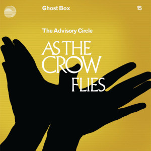

Le hasard a voulu qu’après la dystopie 84K, de Claire North, racontant le cauchemar d’un Royaume-Uni privatisé jusqu’à l’os, je me plonge dans Spectres de ma vie, du philosophe britannique Mark Fisher, également connu sous le nom de k-punk. Or il m’est impossible de ne pas voir de liens entre les deux ouvrages, comme si j’avais inconsciemment voulu continuer à me saper le moral. Sous-titré Écrits sur la dépression, l’hantologie et la futurs perdus, je me doutais pourtant que ce recueil de textes n’allait pas être un grand moment de rigolade. Qu’on ne s’y méprenne pas : j’ai trouvé ça passionnant. Par contre, il m’a plongé dans un état entre l’obsession et le désespoir. Je ne peux d’ailleurs pas prétendre avoir tout compris et serais bien incapable d’en retranscrire ici le propos, de peur de le trahir. Se contenter de dire qu’il s’agit d’un ouvrage foncièrement anticapitaliste ne nous emmène malheureusement pas très loin, mais c’est un début.
Entre autres choses, ce livre parle beaucoup de musique. Mark Fisher revient notamment longuement sur le monument Joy Division (histoire de donner le ton niveau fun) et la façon dont ce groupe de la fin des années ‘70 s’inscrit dans l’histoire sociale du Royaume-Uni. En plus récent, un artiste tel que Burial, par contre, m’était totalement inconnu et illustre à merveille le propos général de l’ouvrage. Avec deux albums sortis en 2006 et 2007, ses tracks nous donnent l’impression d’être au beau milieu d’une fête qui n’a pas vraiment lieu, dont la substance est absente. Un fantôme de fête dans un hangar vide. Des sons qui, s’ils étaient manifestement déjà très actuels au cours de la décennie 2000 (et résonnaient, semble-t-il, avec les espoirs déçus de la culture rave), explosent littéralement à mes oreilles en ce début de décennie 2020 qu’on peut difficilement qualifier de festif. En plus apaisé, The Advisory Circle, dont les sons apparentés à l’ambient ne sont pas sans me rappeler Kraftwerk, me plaît également beaucoup (et me donne globalement envie d’explorer le label Ghost Box). Ces artistes cités par Mark Fisher ont en fait comme point commun d’aller puiser dans des sons du passé pour les faire hanter un présent qui, fait remarquer l’auteur, n’en finit pas de s’éterniser (d’où le terme “hantologie”, que je résume ici maladroitement). Plus généralement, Spectres de ma vie explore tout un pan de la culture britannique sous l’angle de ce que les politiques mises en place à partir des années Thatcher lui ont fait subir. Difficile, déprimant, mais fascinant.
Sortie originale (anglais) : 2014 / Version française : 2021 (traduction : Julien Guazzini)